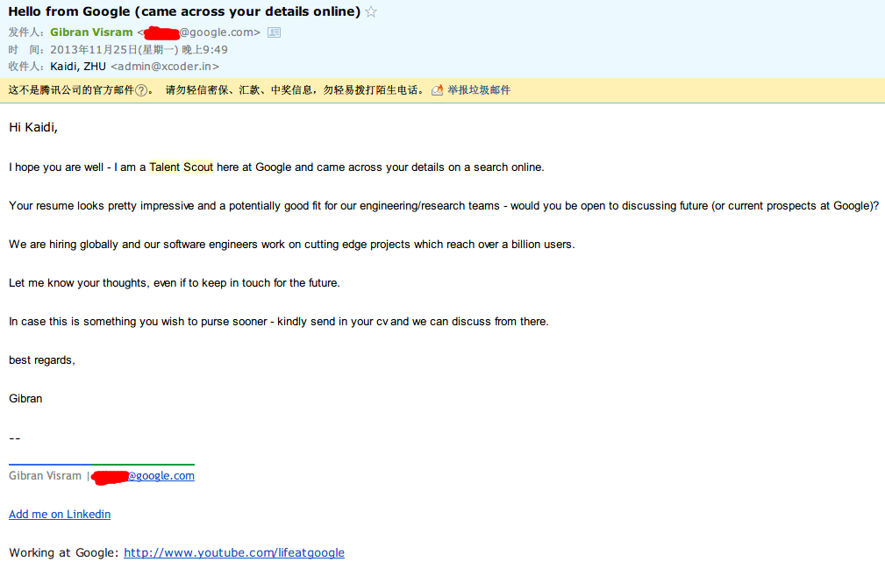

关于
ZHU, Kaidi (XadillaX)
LINKS & CONTACT
- Blog: http://xcoder.in/
- GitHub: XadillaX
- Email: broken@letme.repair
- QQ: 8644325
- Mobile: (+86)1525○○○○599
INTRODUCE
I dived into programming because I want to create a game of my own world at first. I went to ACM/ICPC programming contest for several times, and for this, I believe in my algorithm level.
I built the ACM/ICPC training team for my alma mater, and I have several mentees that trained by me. What’s more, I wrote the Online Judge System for my alma mater.
I created many independent games during my Bachelor time, almost of them were based on a game engine, HGE or a game engine built by myself called XAE.
When I went to Zhejiang University, I came across with Node.js and then I fell in love with her. I think she’s so elegant and beautiful.
On 25th, November 2013, I received en email from a Google England Talent Scout. He invited me to discuss if I was fit for their engineering/research teams. But what a pity, after I’ve discussed with him, I knew that they were hiring full-time employees but not intern students.

Education
Sep 2013 - Jun 2015, Zhejiang University
- Master
- Backend leader of “XPlan Team”
Sep 2009 - Jun 2013, Ningbo University of Technology
- Bachelor in Computer Science and Technology degree (CST).
- Founder and student coach of NBUT ACM/ICPC TEAM. And be the NBUT ACM/ICPC Contest examiner for three years.
- The only developer and the first operations staff of NBUT Online Judge System.
SKILLS
- Language: C/C++ > Node.js > PHP > (HTML, CSS) > C# > ASP, etc.
- OS: MacOS, Linux and Windows
- Editor & IDE: WebStorm, Visual Studio, VIM, Sublime Text, etc.
- Database: MongoDB > MySQL
WORK
Ningbo ONUOO Network Technology Co., Ltd
2011-03 ~ 2012-12
I am the developer of that company (remote work). The main work was to developer the card game based on FoxUC. I also took part in a project called New World which will be metioned below.
aquaMobile, Madrid, Spain
2011-07 ~ 2011-09
I had a three-month-internship in Spain. During that time, I was responsible for the new version of its official website.
Ningbo TrananX Network Technology Co., Ltd
2012-12 ~ 2013-07
I was the only technical staff in that company. So all of the developing work including systemg architecture and server are my work. It will be mentioned below.
AWARDS
- The First Prize and 100, 000 CNY Bonus. The 1st Tarena “Catch Cup” Software Contest Final Round (NATIONAL).
- Gold. The 8th Zhejiang Provincial Collegiate Programming Contest. (Teammate: HU, Jixiang; ZHANG, Cong)
- The Second Class Prize. The 3rd “Blue Bridge” Software Contest C/C++ Group (NATIONAL).
- The First Class Prize. The 3rd “Blue Bridge” Software Contest C/C++ Group (ZHEJIANG).
- Silver. The 9th Zhejiang Provincial Collegiate Programming Contest. (Teammate: HU, Jixiang; ZHANG, Cong)
- Silver. The 10th Zhejiang Provincial Collegiate Programming Contest. (Teammate: WU, Duanduan; SHEN, Zhiqi)
- Bronze. 2010 Unitop Cup ACM-ICPC China Hangzhou Invitational Programming Contest. (Teamate: HU, Jixiang; YE, Jianjing)
- Bronze. Google Cup 2011 ACM-ICPC China Shanghai Fudan Invitational Programming Contest. (Teammate: HU, Jixiang; BAO, Xianghong)
- NBUT Top 10 College Students.
PROJECT
Ningbo University of Technology Online Judge System
This system is designed for the ACMers. It is known as “MOEest” UI so far in China. The website of this system is written in ThinkPHP framework and running in CentOS 6.3. The database is MySQL. And what’s more, the judge-end is written in C++ and running in Windows 7 which the computer is connected directly with the server via wires.
What’s more, it is this project that I won the first prize and 100, 000 CNY bonus in the Catch Cup.
Enter: http://acm.nbut.edu.cn/
New World (Game)
It’s a online game like a slot machine of Korea. The project is outsourced and I am responsible for the client rendering and logic. To be honest, the game is origin in single game, the engine is a wrapper for HGE (Haaf’s Game Engine). Though it’s not developing from zero, it also is a not small project.
By the way, this project is written in C++.
PS: Due to the conflict between developers and customers, this game is no longer operational.
7zcar
This is a Groupon Website for cars. It’s my first work after graduated. I am the only developer of that company. So something like System Architecture, Develop (Frontend, backend), Server Configuration, Operation, Software Implementation are all be done by myself. The operation system of server is CentOS 6.3 and the server software is Tengine (An open-source server software by TAOBAO, modified from Nginx). The database is using MySQL and MongoDB, and the website is using ThinkPHP framework. PHP-CLI is used for the process of sending email and SMS queue. SevenzJS (An open-source NODE.JS framework by me) is used for the server of 4S Shop client and that client is written in C#.
PS: Aha, I said that I am the only developer. As a result, all of my superiors don’t know any IT knowledge. This project beyond their budget. I am fired after I finishing this project and this project is canceled.
Yogar Life
I was the backend developer of this project and I used “Node.js”. It’s an O2O mobile app that maks goods cheaper.
You can download it from https://itunes.apple.com/us/app/you-jia-sheng-huo/id845032701